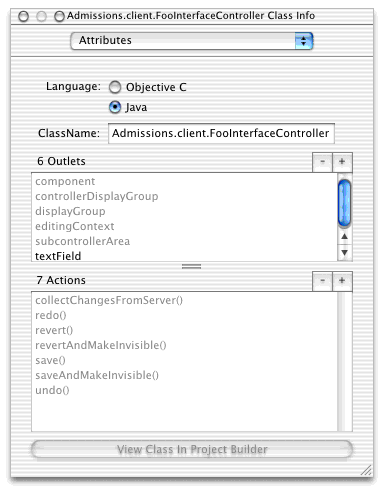
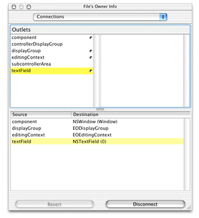

It's common to want programmatic access to user interface components in nib files. In the Cocoa world, outlets for all appropriate user interface components are added to the corresponding Java file for that interface upon adding a component. However, this doesn't happen when building Java Client interfaces in Interface Builder. Fortunately, it's easy to add this functionality to your application.
In a nib file, select File's Owner in the nib file window, switch to the Classes pane, and select Add Outlet from the Classes menu. If the widget in question is a text field, for instance, name the outlet "textField" as shown in Figure 6-20.
Figure 6-20 Add an outlet
Connect the new outlet to a text field by Control-dragging
from the File's Owner icon to the text field and double-clicking textField in
the Outlets column of the Connections pane of the File's Owner
Info window, as shown in Figure 6-21.
Figure 6-21 Connect the new outlet
In the Java class file for the nib file, add a public variable
called textField. You
now have programmatic access to the value and attributes of that
widget. This is useful, for instance, if you want to manipulate
or extract the values of a particular widget.